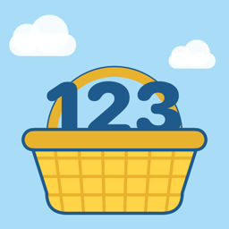

Privacy Policy
Effective October 19, 2026
Fruit Basket 123 collects no data. Everything stays on this device.
What we collect
Nothing. Fruit Basket 123 does not collect, store on any server, share, sell, or transmit any personal information or usage data, from children or from anyone else. The app has no accounts, no sign-in, no advertising, no analytics, no tracking, and no third-party code (SDKs).
What stays on the device
To remember where your child is in each game, the app saves a small file on the device itself. It holds game levels, how many rounds have been played, the fruit on the child's tree, which fruits have been unlocked, and the parent settings. This file never leaves the device. It may be included in your device's own iCloud or computer backup, which Apple manages under its privacy policy. Deleting the app deletes this file. Parents can also clear it at any time with Reset progress in the parent area.
Internet, camera, microphone, and location
The app works completely offline and makes no network connections. It does not use the camera, microphone, photos, contacts, or location. All narration is pre-recorded inside the app.
Children's privacy
Fruit Basket 123 is made for children ages 3–6. Because it collects no personal information, there is nothing to review, export, or delete on our side. This meets the requirements of the Children's Online Privacy Protection Act (COPPA), the GDPR (including its rules for children), and Apple's App Store Kids Category guidelines.
Parental gate
The parent area, and any link that leaves the app (such as this privacy policy), sits behind a grown-up question that young children can't easily answer.
Changes to this policy
If this policy ever changes, the new version will be posted on this page with a new effective date. We will never start collecting children's information without first updating this policy and, where the law requires, getting a parent's permission.
Contact
Questions about privacy? Please send us a message here.